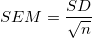

最終更新日：2021/01/10
回帰計算では、近似パラメータのSE（標準誤差）はSD（標準偏差）と同じです。詳細はこのFAQを参照してください。ただし、SEM（標準誤差平均）は回帰では使用されません。主に、データのグループを比較する統計で使用されます。
統計では、SDはデータのグループの分散を表し、SEMは次の式で計算される「平均の標準偏差」を表します。

これは、測定を何度も繰り返した場合の平均がどれだけ適当かを判断するための情報です。一般的に、SDとSEMは大きく異なります。
キーワード:SE, SD, SEM, パラメータ, 非線形曲線フィット,平均の標準誤差, 標準偏差